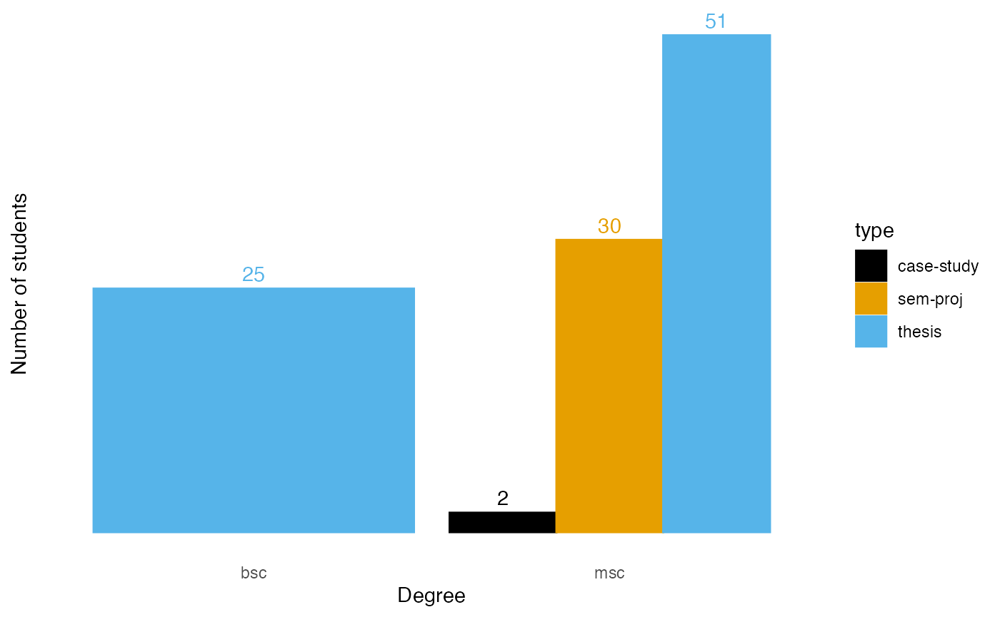
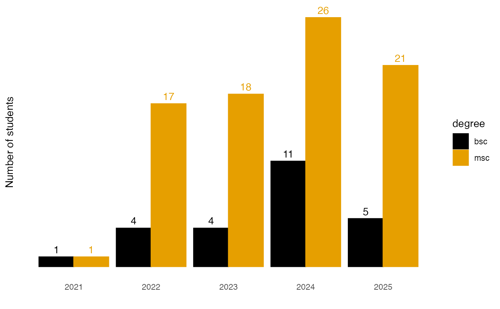
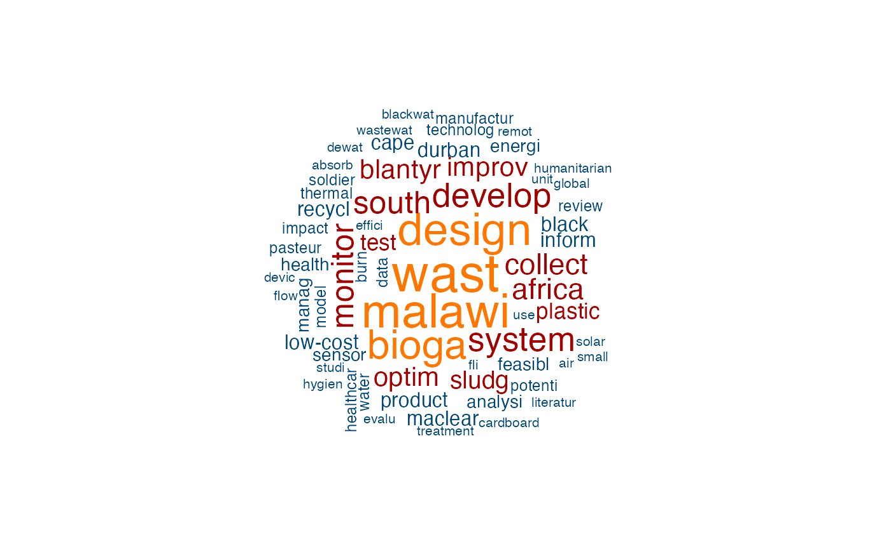

This document provides an overview of the projects that GHE has supervised so far.
Students
So far, GHE has supervised 108 projects of which 25 were done by BSc and 83 by MSc students.
undergrad_students |>
count(degree) |>
ggplot(aes(x = degree, y = n, label = n)) +
geom_col() +
geom_label() +
labs(x = "Degree",
y = "Number of students") +
theme_minimal() +
theme(panel.grid = element_blank(),
axis.text.y = element_blank())The next chart shows the type of projects supervised. For Bachelor’s students it was exclusively theses, for Master’s students both semester projects and theses, with the latter being represented more frequently.
undergrad_students |>
count(degree, type) |>
ggplot(aes(x = degree, y = n, label = n, fill = type, color = type)) +
geom_col(position = "dodge") +
geom_text(position=position_dodge(width=0.9),
vjust=-0.5,
show.legend = FALSE) +
labs(x = "Degree",
y = "Number of students") +
scale_fill_colorblind() +
scale_color_colorblind() +
theme_minimal() +
theme(panel.grid = element_blank(),
axis.text.y = element_blank())
The number of students has risen steadily over the years, with the number of Bachelor’s students more than doubling from 2023 to 2024. The number of Master’s students has risen more slowly in comparison, but is still significantly higher in absolute numbers.
undergrad_students |>
count(degree, year) |>
ggplot(aes(x = year, y = n, label = n, fill = degree, color = degree)) +
geom_col(position = "dodge") +
geom_text(position=position_dodge(width=0.9),
vjust=-0.5,
show.legend = FALSE) +
labs(x = "",
y = "Number of students") +
scale_fill_colorblind() +
scale_color_colorblind() +
theme_minimal() +
theme(panel.grid = element_blank(),
axis.text.y = element_blank())
Finally, the word cloud shows the most frequently used terms in the thesis titles. The larger the font, the more frequently the term was used. It should be noted that the terms have been reduced to their stems (e.g. ‘design’, ‘designing’, ‘designed’ all become ‘design’).
library(quanteda)
#> Package version: 4.1.0
#> Unicode version: 14.0
#> ICU version: 71.1
#> Parallel computing: disabled
#> See https://quanteda.io for tutorials and examples.
library(quanteda.textplots)
textcorpus <- corpus(undergrad_students$thesis_title)
wordcloud <- textcorpus |>
tokens(remove_punct = TRUE) |>
tokens_remove(pattern = stopwords('english')) |>
dfm() |>
dfm_trim(min_termfreq = 2, verbose = FALSE) |>
dfm_wordstem()
set.seed(100)
textplot_wordcloud(wordcloud,
color = c('#004777', '#A30000', '#FF7700'))